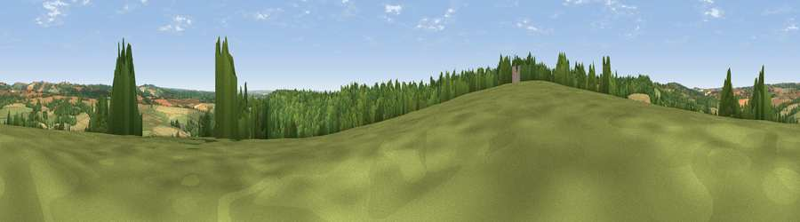

Viewpoint near Upton
#29379 in England · top 38% of its area beats it · near UptonWhere it is
The exact computed spot (SU 36225 53775). Click the marker for map links.
The view, rendered

A 360° render of this exact spot computed from the terrain model, tree cover and land cover — summer colours, afternoon light, calibrated against photographs of famous viewpoints. Real trees, hedges and buildings will differ in detail.
The panorama
Grey silhouette: terrain skyline in each direction (720 bearings, Earth curvature and refraction included). Dashed green: skyline with trees (+15 m) and buildings (+8 m) as obstacles. Blue strip: how far the ground is visible on each bearing.
Where the view opens
Wedge length = distance to the farthest visible ground on that bearing (vegetation-aware). Rings at 10, 25 and 50 km.
What fills the view
39% grassland · 32% cropland · 28% woodland
Angular shares of the visible panorama (visual magnitude), not map area. Landscape diversity 0.48 (0–1 Shannon).
Key numbers
More beautiful places nearby
The staircase of upgrades: each row has a higher view potential than everything closer. Driving times are estimates from straight-line distance, calibrated against real road routing — check an actual route before setting out.
| Place | Direction | Drive | Score |
|---|---|---|---|
| Viewpoint near Tangley | W · 3 km | ~6 min | 43.0 |
| Viewpoint near Faccombe | NNE · 6 km | ~13 min | 52.9 |
| Viewpoint near East End | NNE · 7 km | ~15 min | 69.4 |
| Walbury Hill | N · 8 km | ~16 min | 70.0 |
| Gallows Down | N · 8 km | ~17 min | 75.6 |
| Beacon Hill | ENE · 10 km | ~20 min | 76.7 |
| Martinsell viewpoint | WNW · 21 km | ~35 min | 76.9 |
| Viewpoint near Buriton | SE · 49 km | ~70 min | 80.0 |
51.28197, -1.48199 · source: screening · position refined by local search. Computed location — check access rights before visiting.